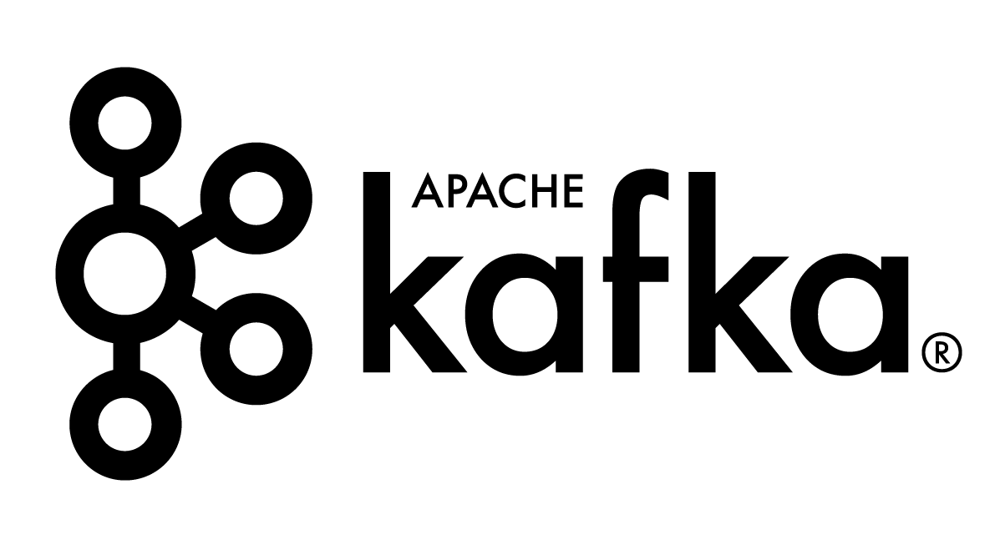
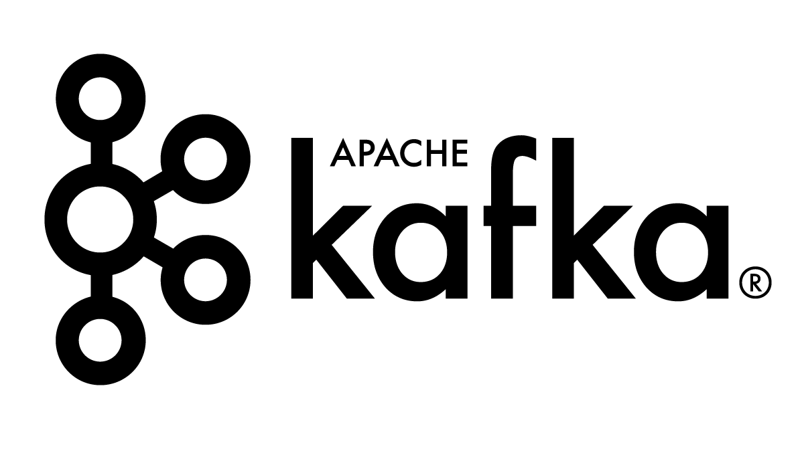

Summary
A tech enthusiast who loves to code with 5+ years of demonstrated experience in developing back end services. Have been part of different phases of SDLC ranging from ideation to deployment.
Skills


 



Experience
Software Engineer Intern - Tarka Labs
- Built authentication mechanism using Slack OAuth API and JWT in Rust; Reduced user auth management in the service.
- Added job application form to careers page allowing candidates to apply directly
Senior Software Engineer - Sahaj Software Engineer
Out-Of-Home Advertising - Inventory Management
- Spearheaded design and development of facade service across salesforce instances using Spring Webflux; Helped client incorporating different salesforce instances to support different media owners.
- Created a low-latency, event-driven service using CometD framework to consume salesforce object changes which reduced the latency by 70%.
Out-Of-Home Advertising - Campaign Optimization
- Generated quality metrics like churn rate, frequency, etc for one of the audience providers using Apache Spark; Improved clients understanding of the impressions quality provided.
- Developed external audience ingestion feature to generate insights for the provided audience; Assisted clients to incorporate custom audience in generating footfall reports.
- Leveraged Test Driven Development expertise in increasing the test coverage to 90% for the existing services.
- Modeled and implemented a S3 crawler for the given time period enabling client to acquire footfall reports.
B2B Marketplace
- Developed several micro services using Spring Boot in an event driven architecture using Apache Kafka.
- Implemented a chat solution using MongooseIM reducing the chat service creation from the scratch for clients.
Member Technical Staff - Zoho Corporation
- Replaced OpenStreetMap with Google Maps in map report increasing the plot accuracy by 80%.
- Utilized knowledge of SOLID principles to refactor report module resulting in a modularized codebase.
- Led and mentored a team to design and develop features of different reports like List, Spreadsheet, Kanban, Map, and Calendar.
Projects
Course Recommendation System — PySpark, Apache Spark:
Developed a KNN algorithm based on different parameters to find the similar users and suggested courses. Performed the analysis for top 10 frequent users and achieved 70% accuracy
GSM Arena Data Collector — Python:
Built a data aggregator that collects features about smartphone from GSMArena for smartphone price prediction which reduced the manual processing by 90%
Market Basket Analysis — R, Apriori:
Performed RFM analysis, market segmentation and item recommendation using Apriori algorithm on the sales data of a inventory store. Created R Shiny dashboard to visualize the clusters and their properties like recency, frequence and monetary